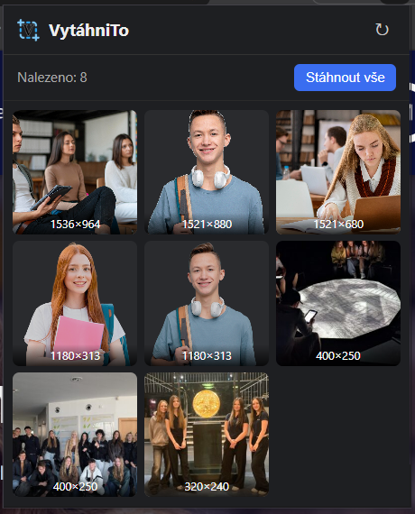

Rozšíření pro Chrome, které vytáhne všechny obrázky a videa ze stránky - i ty zabezpečené proti stažení.
A Chrome extension that pulls every image and video off a page - including ones protected against downloading.

VytáhniTo je jednoduché rozšíření pro prohlížeče založené na Chromiu. Po kliknutí na ikonu prohledá aktuální stránku a najde všechny reálné obrázky - včetně těch, které web schovává za lazy-loading, CSS pozadí nebo ochranu proti klikání pravým tlačítkem. Výsledek zobrazí v přehledné mřížce, odkud je možné obrázky otevřít, zkopírovat jejich adresu, nebo je rovnou stáhnout.
Na záložce Videa funguje podobně jako VideoDownloadHelper: sleduje síťový provoz stránky a zachytí přehrávaná videa a streamy. Počet nalezených médií se zobrazuje přímo na ikoně rozšíření.
VytáhniTo is a simple extension for Chromium-based browsers. Click its icon and it scans the current page for every real image - including ones the site hides behind lazy-loading, CSS backgrounds or right-click protection. The results are shown in a clear grid where you can open the images, copy their address, or download them straight away.
The Videos tab works much like VideoDownloadHelper: it watches the page's network traffic and captures the videos and streams being played. The number of found media is shown right on the extension icon.
<img> prvky (včetně lazy-loaded a srcset variant) i background-image, a to i ve vložených rámcích (iframe).<video>, <audio> a odkazy na mediální soubory. Zachytí přímé soubory (MP4, WebM, MOV, MP3…), které se stáhnou tak, jak jsou. Nalezená videa si pamatuje pro každou záložku, dokud z ní neodejdete..m3u8) - lze vybrat kvalitu; segmenty se stáhnou, případně dešifrují (AES-128) a spojí do jednoho souboru .ts / .mp4. Má-li stream zvuk zvlášť, uloží se jako druhý soubor (…_audio). Průběh ukazuje procenta, rychlost a zbývající čas a stahování běží na pozadí i po zavření okna rozšíření. Segmenty se průběžně odkládají mimo paměť, takže projdou i dlouhé filmy. Když některý segment selže, stahování pokračuje a na konci lze chybějící zkusit znovu nebo video uložit i tak..mpd stáhnout nelze, jejich URL lze ale zkopírovat (např. pro yt-dlp). Video chráněné DRM (Widevine, PlayReady, FairPlay) rozšíření rozpozná, označí a vysvětlí, proč ho stáhnout nejde.yt-dlp ke zkopírování.VytahniTo/YouTube/…), podle stránky (VytahniTo/iDNES/název stránky/…) nebo vůbec, dotaz kam uložit, minimální velikost obrázků, filtr log a ikon a počet videí na ikoně. Nastavení se synchronizuje mezi prohlížeči přihlášenými ke stejnému účtu Chrome.<img> elements (including lazy-loaded and srcset variants) as well as background-image, even inside embedded frames (iframes).<video> and <audio> elements and links to media files. Direct files (MP4, WebM, MOV, MP3…) are downloaded as they are. Found videos are remembered for each tab until you navigate away..m3u8) - pick a quality; segments are downloaded, AES-128 decrypted if needed, and joined into a single .ts / .mp4 file. If the stream has separate audio, it's saved as a second file (…_audio). Progress shows percentage, speed and time left, and the download keeps running in the background after the extension window closes. Segments are moved out of memory as they arrive, so even long movies work. If a segment fails, the download carries on and at the end you can retry the missing ones or save anyway..mpd streams can't be downloaded, but their URL can be copied (e.g. for yt-dlp). DRM-protected video (Widevine, PlayReady, FairPlay) is detected and marked, and the extension explains why it can't be downloaded.yt-dlp command instead.VytahniTo/YouTube/…), by page (VytahniTo/iDNES/page title/…) or not at all, asking where to save, minimum image size, logo and icon filter, and the video count on the icon. Settings sync across browsers signed in to the same Chrome account.chrome://extensions.chrome://extensions in your browser.| OprávněníPermission | K čemu sloužíWhat it's for |
|---|---|
activeTab | Přístup k aktivní záložce v okamžiku kliknutí na rozšíření.Access to the active tab when you click the extension. |
scripting | Vložení skenovacího skriptu do prohlížené stránky.Injecting the scanning script into the page you're viewing. |
downloads | Uložení nalezených obrázků a videí na disk.Saving found images and videos to disk. |
clipboardWrite | Kopírování URL adres obrázků a videí do schránky.Copying image and video URLs to the clipboard. |
webRequest + přístup ke všem webům+ access to all sites | Zachycení video streamů, které stránka načítá.Detecting the video streams a page loads. |
storage | Zapamatování nalezených videí a průběhu stahování pro danou záložku a uložení nastavení.Remembering found videos and download progress per tab, and keeping your settings. |
offscreen | Spojení segmentů HLS streamu do jednoho souboru na pozadí.Joining HLS stream segments into one file in the background. |
| SouborFile | ÚčelPurpose |
|---|---|
manifest.json | Definice rozšíření (Manifest V3), ikony a oprávnění.Extension definition (Manifest V3), icons and permissions. |
popup.html | Rozložení vyskakovacího okna rozšíření.Layout of the extension popup. |
popup.css | Vzhled vyskakovacího okna.Popup styling. |
popup.js | Logika skenování stránky, vykreslení obrázků a videí a stahování.Page scanning, rendering images and videos, and downloading. |
background.js | Service worker - zachytává video požadavky a řídí stahování HLS.Service worker - captures video requests and coordinates HLS downloads. |
offscreen.html, offscreen.js | Stažení, dešifrování a spojení segmentů HLS streamu.Downloading, decrypting and joining HLS stream segments. |
settings.js | Nastavení, názvy webů pro složky a skládání cest ke stažení.Settings, website names for folders, and building download paths. |
i18n.js | Překlady rozhraní (čeština, angličtina).UI translations (Czech, English). |
m3u8.js | Parser HLS playlistů.HLS playlist parser. |
icons/ | Ikony rozšíření v různých velikostech.Extension icons in various sizes. |